本书作者：测试开发刚哥，文章版权归个人所有，未经授权请勿转载。
5.1 AI工具简介
5.1.1 Function Calling
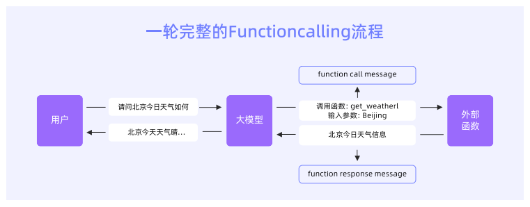
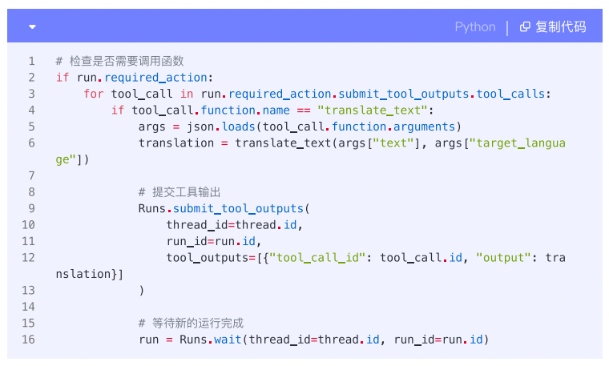
Function Calling需要编写代码，并且存在规格碎片化、可靠性挑战、工程治理缺位、厂商锁定与迁移成本高等问题。
5.1.2 MCP
MCP，Model Context Protocol，模型上下文协议，是一个开放标准，帮助连接AI助手与数据所在的系统，包括内容存储库、业务工具和开发环境。
MCP可以看作是AI应用程序的“USB-C端口”，就像USB-C为连接设备与各种外设提供了标准化方式，MCP为AI模型连接不同数据源和工具提供了标准化方法。
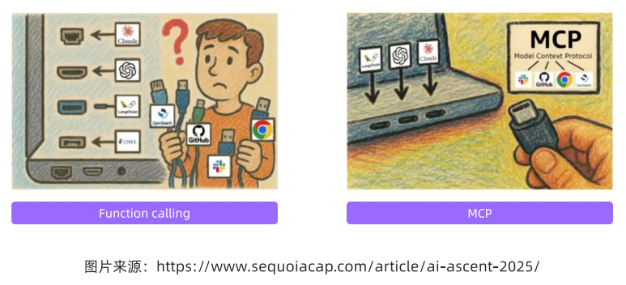
MCP把工具（Tools）、资源（Resources/用于检索与长上下文读写）、提示（Prompts）、会话（Sessions）、取样/推理（Sampling）等能力统一纳入协议语义，并标准化“枚举-描述-请求-响应-权限-审计”的全链路。传输层上，MCP不限定具体载体，既可以通过HTTP/WebSocket，也可以通过stdio等方式交换消息。
5.1.3 MCP就足够了吗
无论是RAG、Function Call还是MCP，其实都是为了让模型获取更多知识，调用更多工具来完成更复杂的事情。MCP并不是万能的，短期内存在不确定性与不同声音，国内是否成为事实标准亦未定。以MCP为协议底座，叠加AI工具接入的最佳实践与企业级安全治理，才能把“可接入”变成“可规模、可移植、可审计”的Agent能力。
5.2 AI工具标准化
5.2.1 MCP协议介绍
MCP协议遵循客户端-服务器（Client-Server）架构，允许AI应用程序通过MCP客户端与多个MCP服务器建立连接。MCP架构包含以下几个部分：
-
MCP Host：协调和管理一个或多个MCP客户端的AI应用程序，如Claude Desktop、Visual Studio Code等，需要通过MCP协议访问数据。
-
MCP Client：MCP客户端，运行在MCP Host内部，负责与MCP Server建立并维护连接。MCP Host会为每一个MCP Server单独创建一个Client，Client与Server保持一对一连接。
-
MCP Server：MCP服务器，轻量级程序，通过MCP协议公开特定功能。MCP协议规定了MCP Server可为Client提供工具、资源文件以及提示词模板。
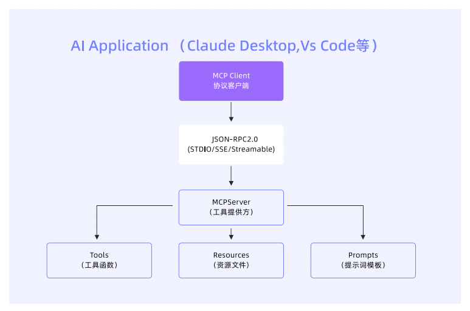
MCP协议采用JSON-RPC 2.0作为通信规范，所有消息均使用JSON格式进行序列化。消息类型包括：Request、Result、Error、Notification。示例如下：
请求：
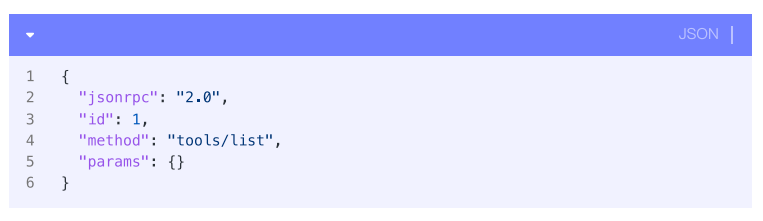
响应：
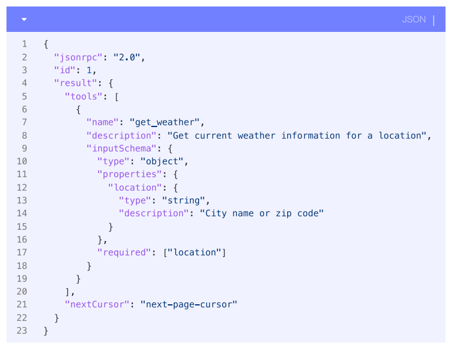
AI应用程序与MCP Server交互的整体流程如下：
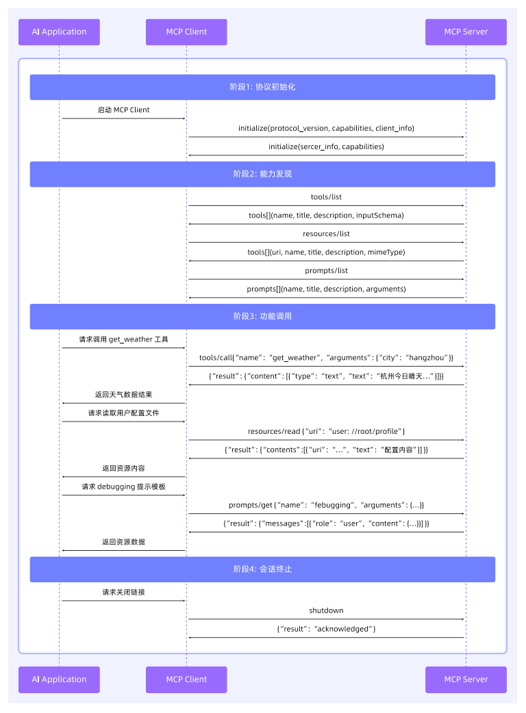
5.2.2 MCP的核心优势
-
标准化模型与工具的连接方式
-
灵活的资源调度方式
-
支持双向、异步通信
-
支持能力共享
-
构建方式便捷
5.2.3 MCP面临的挑战
-
安全问题
-
大规模应用问题
-
集中管理问题
5.2.4 可行的解决方案
1、AI网关解决MCP安全问题
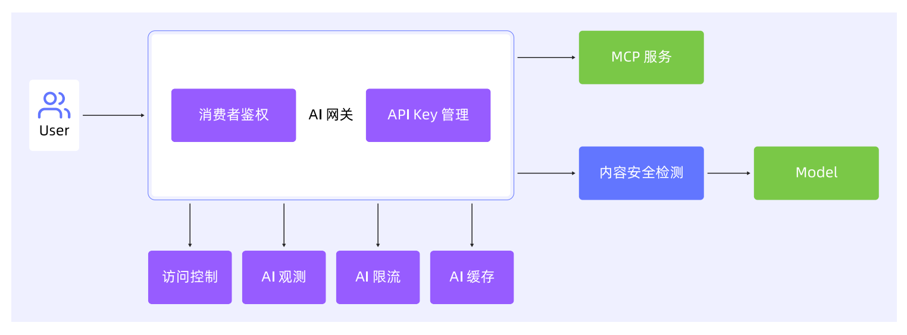
下一章将详细介绍AI网关。
2、工具优选和语义检索提升批量MCP的调用质量、降低调用耗时
-
工具优选：当模型请求在经过网关调用LLM时，携带含有大量工具的tool_calls数组时，网关侧基于Qwen3 Embedding和Qwen3 Reranker的方案，提供工具的精选能力，将tool_calls的数量压缩至目标数量，以提升模型响应速度与工具选择精确性。
-
语义检索：基于Higress网关的WASM插件机制，通过创建一个“All-in-One”的MCP Server，将用户在网关实例中注册的所有MCP工具进行统一聚合和管理，并提供智能的语义化检索能力。
3、Nacos解决“MCP爆炸”问题
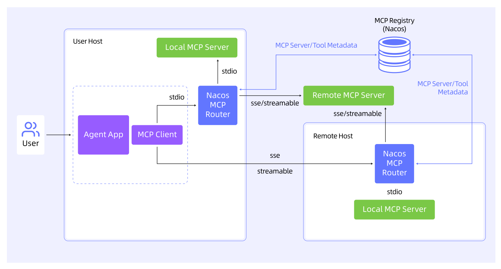
MCP Registry允许用户将已有的MCP服务统一注册到Nacos上，Router则可以根据用户任务的语义描述和关键词，从MCP Registry中筛选出最匹配的MCP服务，然后将这些服务提供给模型进行决策。
4、HiMarket解决MCP管理问题
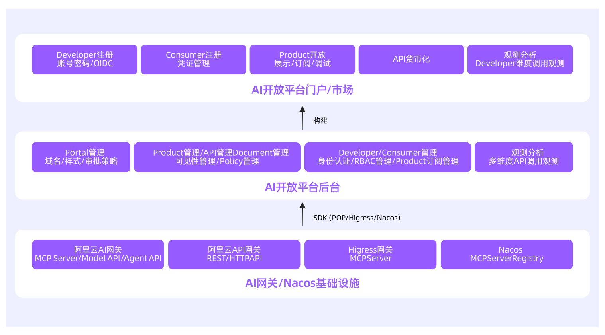
HiMarket是一个开箱即用的AI开放平台，可用于帮助用户实现MCP服务的集中化管理。
5.3 MCP实践
5.3.1 构建MCP的实践
1、从零快速构建MCP Server
框架：
-
Spring AI MCP（Java）
-
FastMCP（Python）
-
MCP-Framework（TypeScript）
更多技术选型可以参考官方文档：https://mcp-docs.cn/introduction
代码示例：
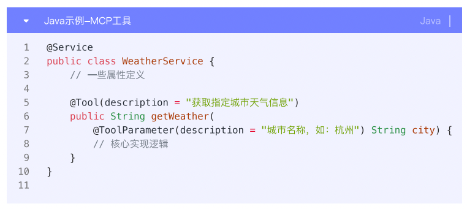
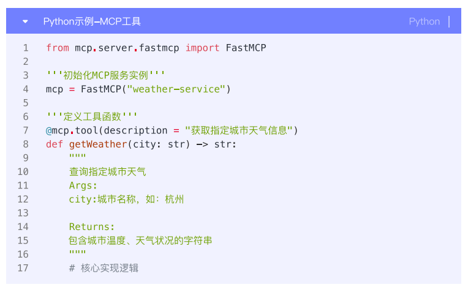
2、基于存量OpenAPI构建MCP Server
构建一个中间转换层，将MCP协议的请求转换为对现有的OpenAPI的调用，并将API的响应转换为MCP协议的格式。
目前已经有成熟的API网关和开源工具提供了自动化解决方案，以下可以参考：
-
利用Higress AI网关实现零代码接入
-
结合Nacos提供MCP Registry能力
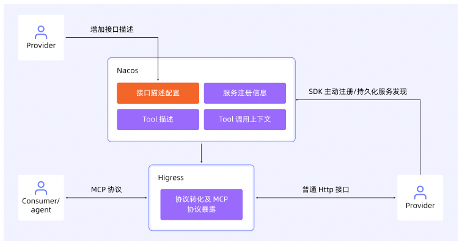
3、MCP Server优化与扩展
-
数据处理优化：数据聚合与精简、数据结构转换
-
性能与可靠性：缓存与异步、连接管理、可观测性
-
安全与合规：身份认证与授权、日志记录、持续升级策略
-
功能扩展
5.3.2 从第一个MCP Server开始
MCP Server的开发之旅，从技术上讲并不复杂，但要构建一个真正生产可用、性能卓越、智能高效的服务器，则需要在协议理解、业务封装、性能优化和安全防护等多个维度上精益求精。
参考资料：